🌺 EL ESPECTRO ESCARLATA DEL HIBISCO
🌺 Indicador de pH con Flor de Jamaica (Hibisco)
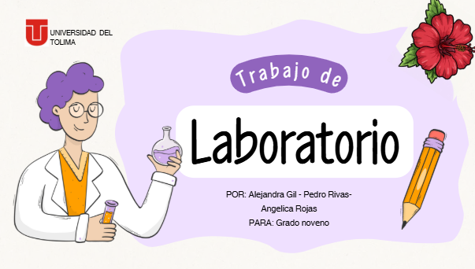  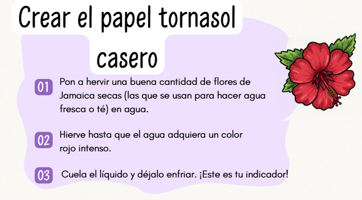 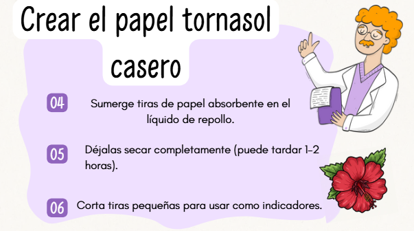 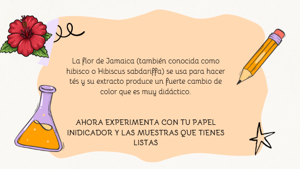
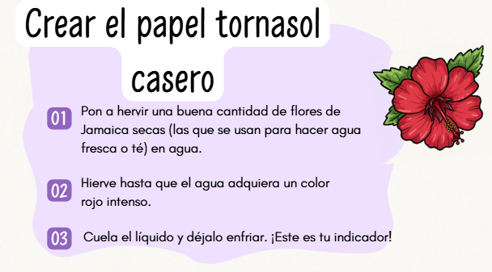 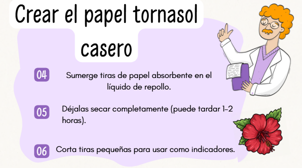 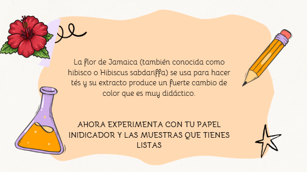
🌺 Indicador de pH con Flor de Jamaica (Hibisco)
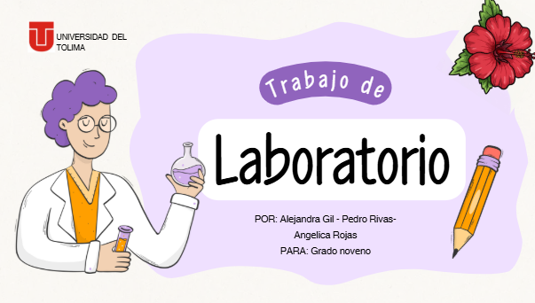 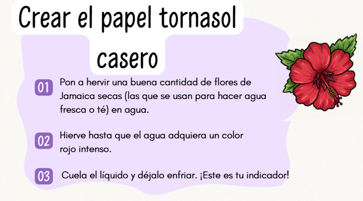 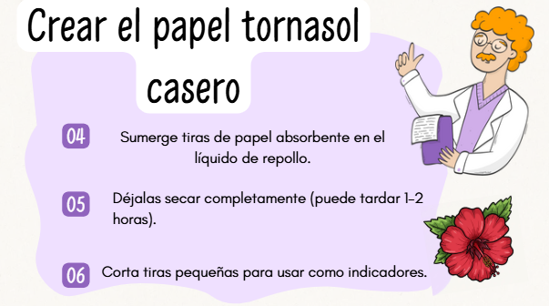 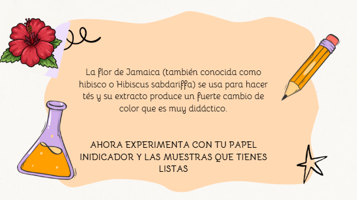
Observa el video y reconoce el uso de las tiras indicadoras de pH.
Hola, futuros químicos de noveno grado,
¡Es hora de llevar la ciencia de la teoría a la práctica! Esta semana nos convertiremos en científicos analíticos utilizando un poderoso ingrediente natural: la Flor de Jamaica (Hibisco). Con ella, crearemos un indicador de pH capaz de revelar la naturaleza ácida o básica de varias sustancias comunes en casa.
Pero un gran experimento requiere una gran documentación. Por eso, su misión será doble: elaborar un Pre-informe antes de la práctica y un Informe Final después de la práctica.
¡Manos a la obra y que la química los acompañe!
Obra publicada con Licencia Creative Commons Reconocimiento Compartir igual 4.0